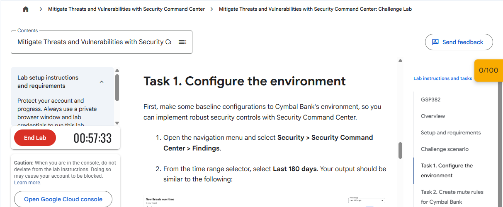
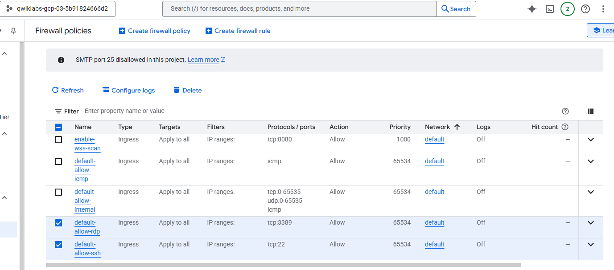
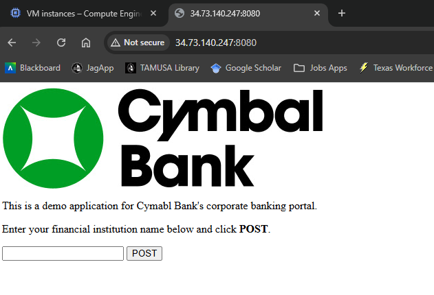
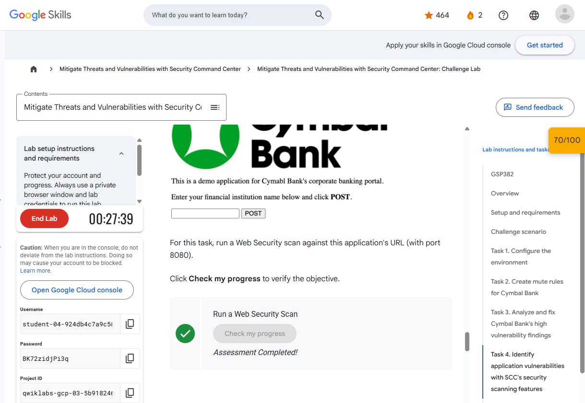
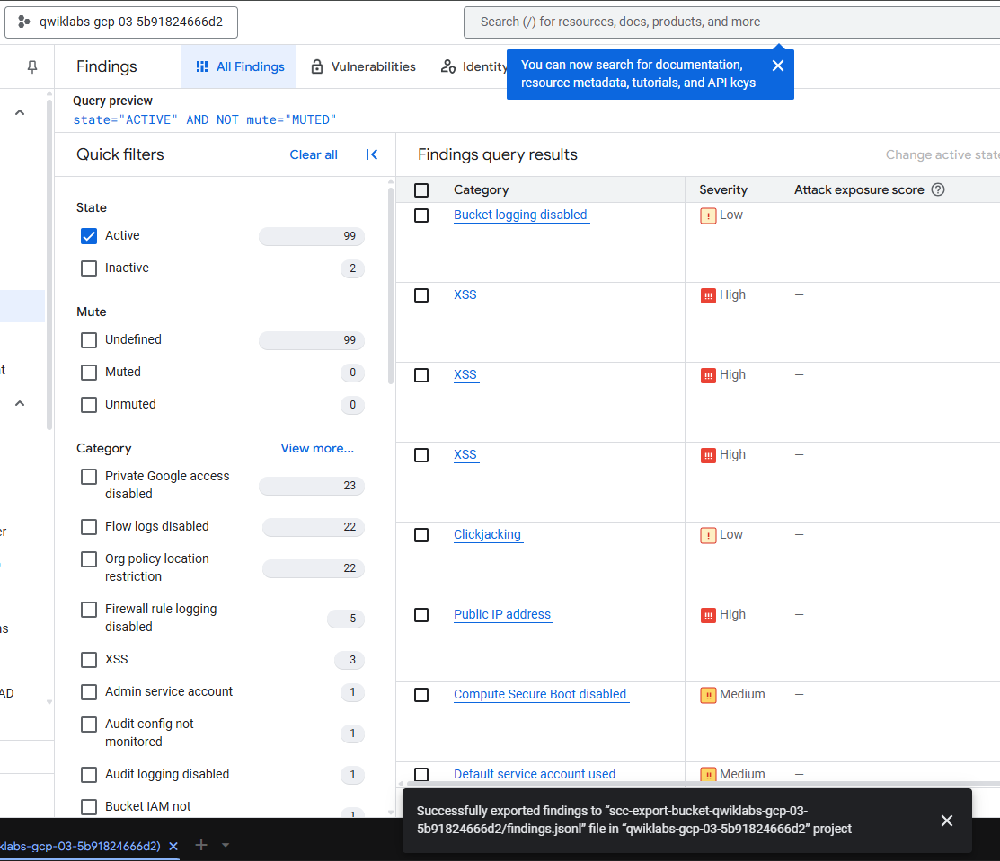
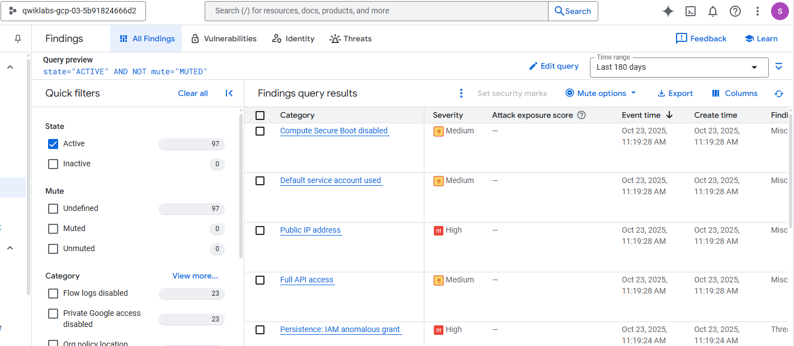

Findings
Configured SCC, reviewed security findings, prioritized vulnerabilities, and corrected identified conditions.
Cloud Security • Vulnerability Management • Threat Detection
Cloud Computing (CSCI 5372)
A completed five-module Google Cloud project covering Security Command Center configuration, finding analysis, Web Security Scanner, Event Threat Detection, remediation, mute rules, and findings export.
Configured SCC, reviewed security findings, prioritized vulnerabilities, and corrected identified conditions.
Deployed a vulnerable application, detected XSS with Web Security Scanner, remediated it, and scanned again.
Used Event Threat Detection, investigation workflows, mute rules, Pub/Sub, BigQuery, and Cloud Storage export.
Six original challenge-lab screenshots are displayed here. All five Markdown walkthroughs and complete screenshot sets remain in the repository.






Project Assignment 2 preserves the original five module walkthroughs and their screenshots.